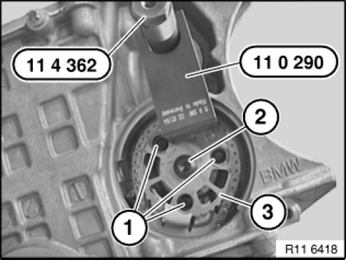
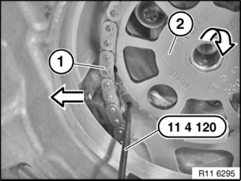
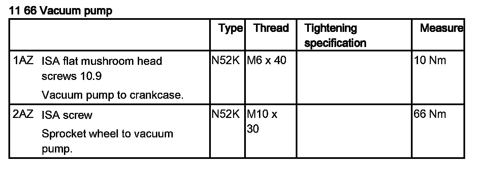

Vacuum Pump: Service and Repair
11 66 000 Removing And Installing Or Replacing Vacuum Pump (N52)Special tools required:

Necessary preliminary tasks:
- Remove drive belt.
- Remove belt tensioner for drive belt.
- Remove sealing cap for vacuum pump.
- Remove intake plenum.

Rotate crankshaft at central bolt.
Rotate camshaft sprocket (3) until drilled holes and screws (1) match up.
Screw in special tool 11 4 362.

Secure special tool 11 0 290 in sprocket (3) and on special tool 11 4 362.
Release screw (2).
Tightening torque: 11 66 2AZ.
Release screws (1) and secure against falling out.
Tightening torque: 11 66 1AZ.
Remove vacuum pump towards rear.
Installation note:
Replace gasket.
Press chain tensioner with chain (1) in direction of arrow.
Insert special tool 11 4 120.
Remove special tool 11 0 290.
Remove camshaft sprocket (2) in direction of arrow.

Assemble engine.


